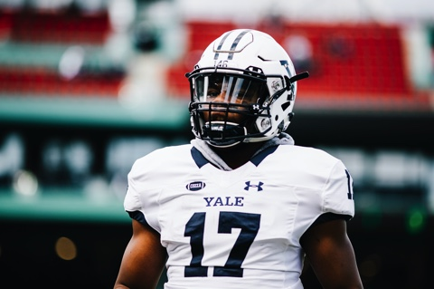

About Me
My name is Oluseun Omonije, but I go by Seun. I am a rising junior at Yale University, working towards my BS in Computer Science. I have a passion for problem solving, competing, and improving. Programming is just my favorite way of doing so. I'm a member of the Varsity Football team at Yale, 2019 Ivy League Champions. #RollDogs.
God and Family are two things that are very important to me. I am extremely blessed to have two loving parents and two other loving siblings, and one my favorite things to do is spend time with them. Now that I've been on my own for sometime and able to make my own decisions, I've really understood the value that family has more than when I was living under my parents' roof. I'm so grateful for what my parents have done for me, my father is an immigrant from Nigeria, and my mother grew up with a rough childhood, and they sacrificed alot in order to get me where I am today.
I grew up playing all types of sports, football, basketball, track, lacrosse, baseball, etc. I was always naturally good at the sport that I played, but I fell in love with football the most. One thing led to another, and I ended up playing at Yale. I think sports were an integral part of my childhood due to the fact that they taught me how to compete, how to be mentally tough, and most importantly, how to work for what you want.
My programming journey started when I was around 14. I searched on Google, "How to make money", clicked a wikiHow link, and saw that one of the options was to create a website and then run ads on it. I immediately looked up, "How to create a website", chose an easy drag and drop website, and copied some embed codes of some popular flash games and pasted them into my site. Popular sites like Addicting Games and Candystand were blocked at my school but my domain wasn't, so I took game requests from my friends and the site became pretty popular. I quickly applied for Google Adsense to try and get some revenue, and told my friends to click to ads to get me some money, but I should've known Google would catch on and my account would be suspended, but at this point I didn't care about the money...I loved building something people used. I tried to add other features like posting and social networking, but the drag-and-drop website builder that I used didn't support that feature. After some searching I figured out that I needed to code it. I then googled "How does Facebook code their website" and figured out they used PHP, then searched "How to create posts in PHP". I watched Youtube videos for days and copied the methods I saw, tweaking them for my own site, and eventually created my first social network: 2wocents.com. While doing this, I noticed that I could code for 8+ hours in one sitting, and figured out that this is what I loved to do.
All in all, I feel I am where I am today because of the blessings that I've received, the people who have sacrificed to get me here, and the work that I had to do with the support of my loved ones. While I've come a long way, the exciting thing is that I'm nowhere close to where I want to be.
This is who I am.

|  |  |
 |